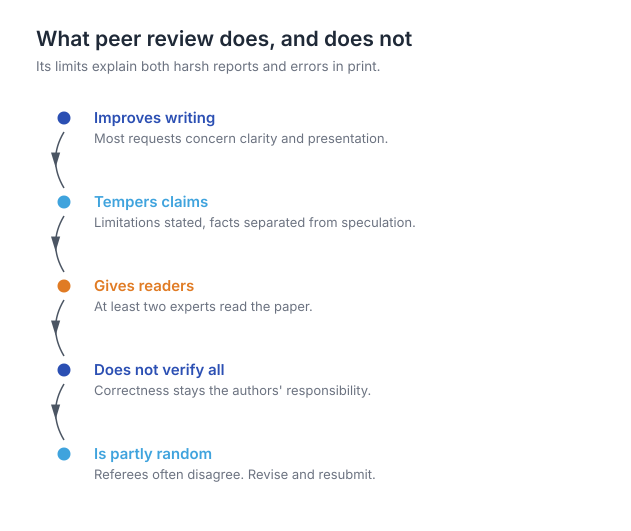

Guides · Publishing
Understanding peer review
What peer review is for, where it comes from, what it does well and what it does not. Knowing its limits helps you write papers that pass it, read reports calmly, and review fairly yourself.

Path · Getting it published · step 4 of 6
Next in this path: Giving a research talk →
Peer review is criticised from all sides. It is slow, decisions are partly random, and errors and fraud still get through. It is also how most scientific work is checked before it enters the record. You will spend your career on both sides of it, so it helps to know what it actually does. The practical side, from the cover letter to the answer to referees, is in the guide on submission and peer review.
A short history#
The first scientific journal, the Philosophical Transactions of the Royal Society, appeared in 1665. From early on, members of the Royal Society were asked to judge which submissions deserved publication. As research became more specialised, editors sent papers to experts.
Systematic review before publication is much more recent. It spread between about 1950 and 1970, when public research funding grew very fast and the number of papers grew with it. Nature made external review a requirement only in 1973. Of Einstein's roughly three hundred papers, only one seems to have been sent to an external referee.
What peer review does well#
- It improves the writing. Most changes requested by referees concern clarity and presentation. Surveys of authors and comparisons of preprints with published versions point in the same direction.
- It tempers claims. Referees ask authors to state limitations, to separate facts from speculation, and to quantify uncertainty.
- It guarantees readers. At least two experts read your paper carefully. For a young researcher without a network, this is valuable.
- It can reduce the weight of reputation. When reviewing is anonymous, a paper is judged more on its content and less on the name of its author or institution.
- It filters bold claims. Most spectacular claims turn out to be wrong. Experts are the best placed to notice it early, before a field spends years on them.
What peer review does not do#
- It is not a full verification. Referees rarely redo every experiment or every computation. In mathematics, a referee checks the main arguments, but responsibility for correctness stays with the authors.
- It is not reproducible. Studies of resubmitted papers show that two referees often disagree, and the same paper can be accepted or rejected depending on who reads it.
- It can discourage the unusual. Papers written to be "review-proof" tend to remove opinions, unfinished ideas and anything a referee could attack.
- It can reward hype. Authors overstate their results to pass the editor's first screening. This happens mostly at the desk-rejection step, before any referee reads the paper.
What this means for you as an author#
- Write for the editor first. The editor decides in minutes whether to send the paper out. State clearly and honestly what is new in the abstract and the introduction. Do not inflate.
- Treat rejection as noise and signal. Part of every decision is chance. Read the reports for what they reveal about your writing, revise, and submit elsewhere. Good work is almost always published in the end.
- Make the referee's work easy. Clear statements, complete proofs, explicit hypotheses, and a fair comparison with earlier work.
- Separate your worth from the report. A harsh report judges one text, on one day, by one reader.
What this means for you as a referee#
- Check what you can, and say what you did not. If you checked only the main proofs, write it.
- Judge the paper, not the author. Even when the review is not anonymous.
- Ask for clarity and honesty, not for the paper you would have written.
- Be open to the unusual, while asking for the evidence that a bold claim needs.
Checklist#
- My abstract and introduction state what is new, without exaggeration.
- My limitations and open points are stated in the paper.
- I read referee reports for what they say about my writing, not about me.
- As a referee, I state which parts I checked in detail.
- As a referee, my requests concern correctness and clarity, not my own preferences.
Summary#
- Peer review in its modern form is only about seventy years old.
- It improves writing, tempers claims and gives every paper expert readers.
- It does not fully verify results, and its decisions are partly random.
- Write clearly and honestly for the editor and the referees, and do not take a decision personally.
Further reading#
This guide draws on an essay on Substack that defends peer review while taking its critics seriously:
- Dan Elton, A Defense of Peer Review, Asimov Press, 2024.
Discussion
Questions, corrections and your own experience are welcome. Comments live in the forum, on GitHub Discussions, with Markdown and LaTeX.